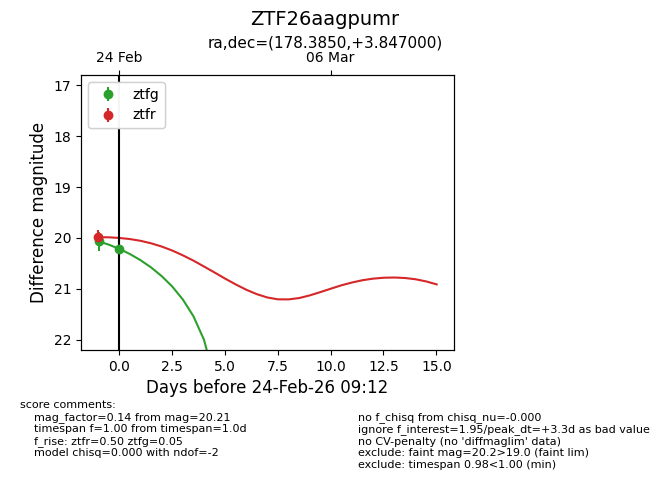
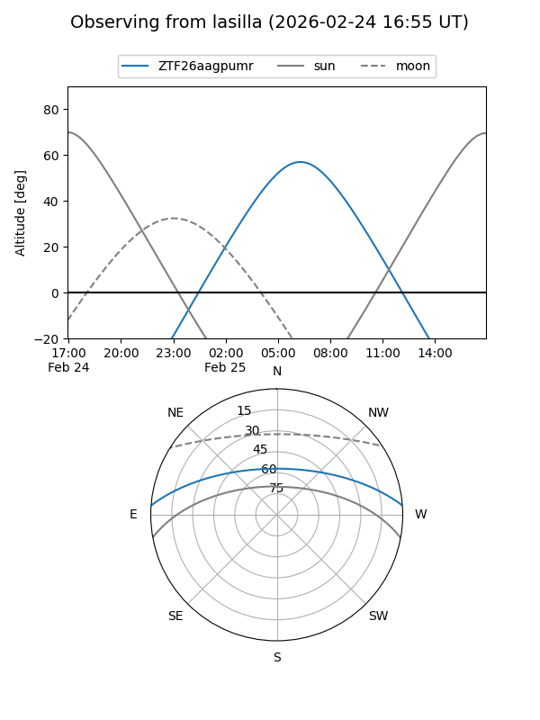
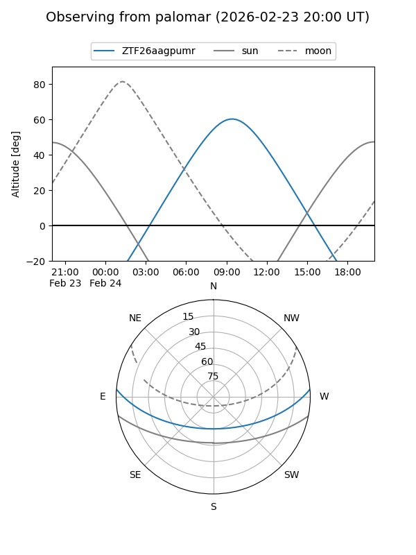
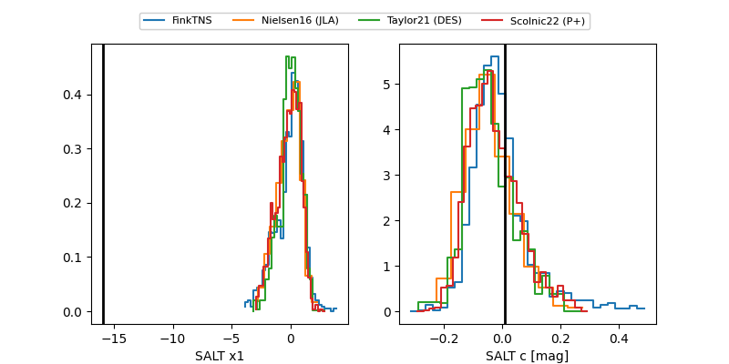

ZTF26aagpumr
Target ZTF26aagpumr at 2026-02-24 09:13
Aliases and brokers:
FINK: link
Lasair: link
ALeRCE: link
alt names
ZTF26aagpumr (ztf,fink_ztf)
Coordinates:
equatorial (ra, dec) = 178.3850,+3.84700
equatorial (HMS+DMS) = 11:53:32.39,+03:50:49.20
galactic (l, b) = (269.7114,+62.92233)
Flags:
Photometry:
last ztfg=20.21, ztfr=19.98
2 ztfg, 1 ztfr detections
Lightcurve

Visibility


Additional plots
